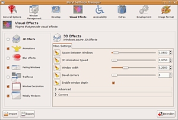
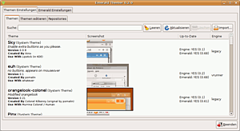

Beryl
Archivierte Anleitung
Dieser Artikel wurde archiviert, da er - oder Teile daraus - nur noch unter einer älteren Ubuntu-Version nutzbar ist. Diese Anleitung wird vom Wiki-Team weder auf Richtigkeit überprüft noch anderweitig gepflegt. Zusätzlich wurde der Artikel für weitere Änderungen gesperrt.
Dieser Artikel wurde für die folgenden Ubuntu-Versionen getestet:
Zum Verständnis dieses Artikels sind folgende Seiten hilfreich:
Achtung!
Da Beryl und Compiz wieder zu einem Projekt zusammengewachsen sind, hat es keinen Sinn mehr, eine veraltete Beryl-Version zu installieren. Ab Feisty Fawn wird Compiz automatisch installiert. Näheres dazu unter Archiv/Desktop-Effekte.
Was ist Beryl?¶
Beryl ist ein Composite-Manager und einer von mehreren Bestandteilen eines Desktops mit 3D-Effekten. Hinweise zu den anderen Komponenten und hardwareabhängigen Empfehlungen für den Einsatz finden sich auf einer Übersichtsseite zu Desktopeffekten. Beryl fungiert neben der Compositing-Funktionalität gleichzeitig auch als Fenstermanager. Näheres über die Beryl-Entstehung findet man hier  und ein paar Bilder kann man hier sehen .
und ein paar Bilder kann man hier sehen .
Installation¶
Paketquellen freischalten¶
Beryl befindet sich erst seit Feisty Fawn in den Ubuntu-Quellen. Bei früheren Versionen muss man eine extra Quelle hinzufügen [2]. Sollte eine Paketquelle nicht funktionieren, findet man unter http://ubuntu.beryl-project.org/ ggf. einen Ausweichserver.
Dapper Drake 6.06¶
Achtung!
Dapper wird offiziell von Beryl nicht mehr unterstützt, es gibt also kein stabiles Release mehr in einer Paketquelle. Die folgende Paketquelle ist für die aktuelle Subversion  von Beryl. Diese ist immer auf dem neuesten Stand - daher ist aber auch oft mit Nicklichkeiten zu rechnen. Man sollte daher hier keine Updates durchführen, über die man sich vorher nicht informiert hat.
von Beryl. Diese ist immer auf dem neuesten Stand - daher ist aber auch oft mit Nicklichkeiten zu rechnen. Man sollte daher hier keine Updates durchführen, über die man sich vorher nicht informiert hat.
Dapper Drake 6.06 LTS
deb http://download.tuxfamily.org/3v1deb dapper beryl-svn
Nun wird der entsprechende GPG-Schlüssel benötigt [3]:
wget http://download.tuxfamily.org/3v1deb/DD800CD9.gpg -O- | sudo apt-key add -
Hinweis!
Zusätzliche Fremdquellen können das System gefährden.
Paketinstallation¶
Jetzt müssen die folgenden Pakete installiert werden [1]:
beryl
emerald-themes (optional, für zusätzliche Fensterdekorationen)
aquamarine (optionaler KDE Fensterdekorator)
heliodor (optionaler GTK2/Beryl Fensterdekorator)
Der Fensterdekorator Emerald ist wesentlich performanter als Helidor (Erfahrungswert) und bietet zumindest auch eine Gnome/Ubuntu-Deko, falls es der Ubuntu/Human-Look sein soll. Ubuntu Themes findet man auf der Webseite des Beryl-Projektes.
Beryl starten¶
Um Beryl das erste Mal zu starten wird im Terminal [3]
beryl-manager
ausgeführt. Im Benachrichtigungsfeld erscheint daraufhin ein kleines rotes Symbol, das einen Edelstein darstellt (Symbol ganz links):
Ein Rechtsklick darauf öffnet ein Auswahlmenü. Hier sollte man als als Fenster-Manager "Beryl" auswählen. Falls Beryl beim Start automatisch gestartet werden soll, legt man die zwei Programme
beryl-manager
beryl
in den Autostart [5]. Falls Beryl nicht gestartet werden kann, wird selbstständig auf einen alternativen Fenstermanager zurückgegriffen, den man auch im Beryl-Manager-Menü festlegen kann.
Start für AIGLX auf Nvidia-Grafikkarten¶
Mit Nvidia-Karten und der Treiberserie 1.0-9xxx wird automatisch direktes Rendering verwendet. Auf manchen Karten bereitet dies Probleme. In diesem Fall bietet es sich an, Beryl manuell zu starten und dabei die Nutzung von AIGLX zu erzwingen. Der Start erfolgt mit dem Befehl
beryl --force-aiglx
Eine Integration der Option in die Einstellungen des Beryl-Managers ist ab Beryl Version 0.1.3 implementiert.
Konfiguration¶
Um weitere Einstellungen vorzunehmen, kann im selben Auswahlmenü die Konfigurationsprogramme "Beryl-Einstellungen" ("Beryl-Settings-Manager") sowie "Emerald-Themen-Verwaltung" ("Emerald-Theme-Manager") genutzt werden. Beide Programme findet man auch im Start-Menü der Desktopumgebung, üblicherweise unter "System -> Einstellungen".
|  |  |
| Beryl-Settings-Manager | Emerald-Theme-Manager |
Beryl Settings Manager¶
Über den "Beryl-Settings-Manager" lassen sich Plugins aktivieren oder deaktivieren, zudem lassen sich alle vorhandenen Einstellungsmöglichkeiten eines Plugins darüber ändern. Weiterhin können Tastaturkürzel eingestellt werden.
Emerald Theme Manager¶
Emerald ist ein Fenster-Dekorationsprogramm für Beryl. Der Emerald-Theme-Manager dient hauptsächlich zur Auswahl des Aussehens der Fensterleisten. Mehr experimentelle Fensterleisten-Themen findet man auf der Webseite des Beryl-Projektes .
Steuerung¶
Es kann passieren, dass Tastenkürzel der Desktop-Umgebungen oder einzelner Programme sich mit den voreingestellten Tastenkürzeln von Beryl-Plugins überschneiden. In dem Fall, kann man die Tastenzuweisung mit dem Beryl-Settings-Manager verändern. Falls die Supertaste, die gleichzeitig der Windows Taste heutiger Tastaturen entspricht, nicht funktionieren sollte, so fehlt eine notwendige Einstellung. Dazu ist folgendes zu tun: "System -> Einstellungen -> Tastatur -> Belegungseinstellungen -> Alt/Win Behavior -> Super is mapped to the Win-keys".
Standardtastenkürzel der Plugins¶
Folgend eine Liste einiger Tastenkürzel. Mehr zu den Tastenkombinationen hier .
| Aktion | Tasten |
| Fenster wechseln auf aktuellem Desktop | ALT + TAB |
| Fenster wechseln auf allen Desktop | STRG + ALT + TAB |
| Fenster in entgegengesetzte Richtung wechseln | ALT + Umschalttaste+ TAB |
| Fenster bewegen | ALT + linke Maustaste gedrückt halten |
| Fenster auf- und zuklappen | Doppelklick auf die Fensterleiste |
| Schnell auf anderes Fenster wechseln | Mittlere Maustaste auf Fensterrahmen klicken |
| Fenstergröße verändern | ALT + Mittlere Maustaste |
| Alle Fenster übersichtlich darstellen (nur gegenwärtiger Schreibtisch) | F9 |
| Alle Fenster übersichtlich darstellen (nur gegenwärtiger Schreibtisch) | Maus in rechte obere Ecke bewegen |
| Alle Fenster übersichtlich darstellen (alle Schreibtische) | F8 |
| Alle Fenster übersichtlich darstellen (alle Schreibtische) | Maus in linke untere Ecke bewegen |
| Schnell auf Desktop wechseln | F6 |
| Schnell auf Desktop wechseln | Maus in rechte untere Ecke bewegen |
| Würfelseite wechseln | STRG + ALT +rechts |
| Würfelseite wechseln und das aktivierte Fenster mitnehmen | STRG + Umschalttaste + ALT + rechts |
| Würfel zum Filmstreifen aufklappen | STRG + ALT + Bild runter, dann kann man den Streifen bei gehaltener Tastenkombination STRG + ALT mit den Richtungstasten nach links und rechts verschieben |
| Würfel mit der Maus drehen | STRG + ALT + linke Maustaste |
| Einmalig reinzoomen | SUPERTASTE + Rechtsklick |
| Manuell reinzoomen | SUPERTASTE + Mausrad hoch |
| Manuell rauszoomen | SUPERTASTE + Mausrad runter |
| Wasser | STRG+ SUPERTASTE |
| Regen | UMSCHALTTASTE + F9 |
| Schnee | SUPERTASTE + F3 |
| Transparenz verändern | ALT+ Mausrad hoch/runter |
| Benchmark | SUPERTASTE + F12 |
| Screenshot (Speicherort Desktop) | SUPERTASTE + Gehaltene Linke Maustaste + Ausschnitt markieren |
| Farbeninvertierung (Bildschirm) | SUPERTASTE + M |
| Farbeninvertierung (Fenster) | SUPERTASTE + N |
Weitere Plugins¶
animations - Die Art der Menü-Animation kann eingestellt werden.
desktop plane - Dient als Alternative zu dem Cube Effekt. Ist ressourcenschonender und stabiler als das Cube Plugin
blur effects - Fensterleisten im Hintergrund werden milchig trüb wiedergegeben. Verbraucht viel Leistung und sollte auf langsamen Rechnern besser abgeschaltet werden
Tipps und Problembehebungen¶
Leistung beschleunigen¶
Um die Leistung zu steigern, müssen folgende Einstellungen vorgenommen werden. Dazu den "Beryl Settings Manager" starten. Nun die folgenden Kommandos ausführen.
Reiter "General Options -> Choices":
Option abwählen: "Detect Refresh Rate"
Option abwählen: "Sync to VBlank"
Reiter "General Options -> Numeric Values":
Option einstellen: "Refresh Rate auf 200 und bestätigen"
Speziell für Intel 915GM-Grafikchipsätze (128 MB shared) sind folgende Einstellungen nötig, um 3D-Animationen überhautp ruckelfrei zu ermöglichen:
Reiter "Blur effects"
Option abwählen: "Blur Decoration"
Nun sollte Beryl schneller laufen. Dieser Tipp basiert auf einen Eintrag im Gentoo Wiki .
Videos bleiben schwarz¶
Beim Abspielen von Videos wird manchmal statt des Bildes nur ein schwarzer Bereich angezeigt. Der Player VLC lässt sich so einstellen, dass Videos auch unter Beryl korrekt dargestellt werden. Dazu startet man VLC, öffnet "Einstellungen -> Einstellungen" und wählt unter "Video -> Ausgabemodule -> Video-Ausgabemodul" die Option "X11 Videoausgabe" aus. Die "Erweiterte Optionen" müssen dabei aktiviert sein. Nun sollten Videos wieder korrekt dargestellt werden.
Schwarze Fenster bei vielen geöffneten Fenstern¶
Bei der Verwendung von Nvidia-Grafikkarten mit dem Nvidia-Treiber kommt es vor, dass neu geöffnete Fenster nur einen schwarzen Inhalt haben, wenn bereits eine bestimmte Anzahl Fenster geöffnet ist. Abhilfe schafft normalerweise folgendes:
Rechtsklick auf das Beryl-Symbol(Beryl Edelstein im Benachrichtigungsfeld)
Erweiterte Optionen für "Beryl -> Renderpfad"
"Copy" auswählen
Leere Fenster bei Java Applikationen¶
Bei der Nutzung von Java Applikationen, wie z.B. ProjectX, kann es vorkommen, dass sich die Applikation mit einem leeren Fenster öffnet. In diesem Fall hilft es den Fenster-Manger in den Beryl Einstellungen auf den ursprünglichen Fenster-Manager zurück zu stellen.
Rechtsklick auf das Diamant-Symbol
und bei den Fenster-Manager Einstellungen den eigentlichen Fenster-Manager anwählen
Dadurch stehen dann gewisse 3D Effekte usw. nicht mehr zur Verfügung, aber man kann ja nach dem Arbeiten mit der Anwendung alles wieder zurück stellen.
Als Alternative dazu kann man eine Umgebungsvariable setzen:
export AWT_TOOLKIT=MToolkit
Das muss entweder vor dem Aufruf der Java-Anwendung in einem Wrapper-Skript erfolgen oder eben direkt als globale Umgebungsvariable.
Fensterrahmen fehlen¶
Es kann vorkommen, dass keine Fensterrahmen geladen werden. Wenn dies der Fall sein sollte, so muss man die Datei /etc/X11/xorg.conf folgendermaßen editieren [4]:
In der Section "Device" müssen folgende Zeilen hinzugefügt werden:
Option "TripleBuffer" "true" Option "AddARGBGLXVisuals" "true"
Sicherstellen, dass die Standardfarbtiefe auf 24 bit eingestellt ist. Sektion Screen:
DefaultDepth 24
GL_ARB_fragment_program is missing¶
Die Fehlermeldung
beryl: water: GL_ARB_fragment_program is missing
weist daraufhin, dass eine bestimmte OpenGL-Erweiterung nicht auf der Grafikkarte genutzt werden kann. Mit dem Beryl-Settings-Manager den Wasser-Effekt zu deaktivieren, sollte das Problem lösen helfen.
KDE, Fensterleiste und aktive Programme¶
Mit gestartetem Beryl werden unter KDE standardmäßig immer alle aktive Programme in der Kontrollleiste angezeigt, unabhängig vom ausgewählten Viewport. Eine Einstellmöglichkeit hierzu gibt es in der momentanen Version von Beryl (0.2.1) nicht.
Wenn man will, dass in der Fensterleiste immer nur die zum jeweiligen Viewport passenden Programme angezeigt werden, muss man folgendermaßen vorgehen:
Zuerst muss man das Applet kicker-compiz
installieren. Dann wählt man per rechtem Mausklick auf die Kontrollleiste "Aus der Kontrollleiste entfernen -> Miniprogramm -> Fensterleiste".
Anschließend rechter Mausklick auf die Kontrollleiste "Miniprogramm hinzufügen -> Fensterleiste-Compiz".
Dann muss man die Datei ~/.kde/share/config/ktaskbarrc editieren [4]. Wenn noch nicht vorhanden, muss man Folgendes hinzufügen:
[General] ShowAllWindows=false
Jetzt am besten ab- und wieder anmelden, danach sollte die Einstellung aktiv werden.
Um auch mit dem Plugin "Window Previews" die korrekte Voransicht der geöffneten Programme zu bekommen, muss noch im Beryl Settings Manager unter "Extras -> Window Previews -> Taskbar" der Haken bei "Taskbar shows only Windows of current Viewport" gesetzt werden.
Beryl mit XGL benutzen¶
Da die Beryl-Pakete in den Original-Quellen nicht für XGL funktionieren, muss man die alten Pakete aus den Beryl-Quellen installieren. Dazu muss zunächst folgende Quelle zu den Paketquellen hinzugefügt werden:
deb http://ubuntu.beryl-project.org feisty main
Nun wird der entsprechende GPG-Schlüssel benötigt [3]:
wget http://ubuntu.beryl-project.org/root@lupine.me.uk.gpg -O- | sudo apt-key add -
Hinweis!
Zusätzliche Fremdquellen können das System gefährden.
Da die dort angebotene Version älter ist, als die in den Ubuntu-Quellen verfügbare, muss man nun noch sicherstellen, dass stets die alte Version verwendet wird. Dazu öffnet man mit Administratorrechten die Datei /etc/apt/preferences [4] und fügt folgenden Text ein:
Package: * Pin: release o=lupine Pin-Priority: 1001
Wurde Beryl bereits zuvor installiert, dann muss einfach Synaptic neu gestartet werden, ein Klick auf Neu laden, einer auf Aktualisierungen vornehmen und dann schließlich Anwenden. Wenn alles richtig gemacht wurde, wird man gewarnt, dass man downgraded. Hat man Beryl noch nicht versucht zu installieren, dann muss einfach das Paket beryl (samt Abhängigkeiten) installiert werden. Nach Abschluss der Installation sollte der Beryl-Manager problemlos gestartet werden können.
beryl-manager
Wenn eventuell später wieder die Original-Quellen verwendet werden sollen, dann muss in /etc/apt/preferences die Pin-Priority einfach auf 1000 geändert werden.
- Erstellt mit Inyoka
-
 2004 – 2017 ubuntuusers.de • Einige Rechte vorbehalten
2004 – 2017 ubuntuusers.de • Einige Rechte vorbehalten
Lizenz • Kontakt • Datenschutz • Impressum • Serverstatus -
Serverhousing gespendet von